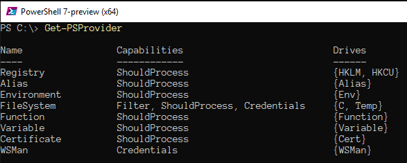

A PowerShell-ben elérhető és az alapparancsokkal kezelhető adattár-szolgáltatók
névsorát a Get-PSProvider utasítással jeleníthetjük meg.

Get-PSProvider
Az adattár-szolgáltatók képességei (Capabilities ) a következők
lehetnek:
Az adattárak gyökér meghajtóit a Get-PSDrive utasítással listázhatjuk.
Get-PSDrive
Kiegészítő modulok és szkriptek újabb tárhelyekkel és meghajtókkal bővíthetik
a PowerShell munkakörnyezetet; tipikus példa erre a vállalati környezetben
használt Active Directory modul, amely importáláskor az AD: meghajtót telepíti.
Active Directory Module with AD: drive
Új meghajtók létrehozásához (például megosztott hálózati mappák felcsatolásához)
a New-PSDrive parancsmagot, létező meghajtók eltávolításához
a Remove-PSDrive parancsmagot használjuk. Ezek alkalmazására
jó példákat láthatunk a parancsmagok súgójában:
Examples of PSDrive creation and removal
Az adattár-szolgáltatókról elérhető tájékoztató oldalakat a
Get-Help about_*_provider utasítással kérhetjük a képernyőre.
Help topics about PSProviders